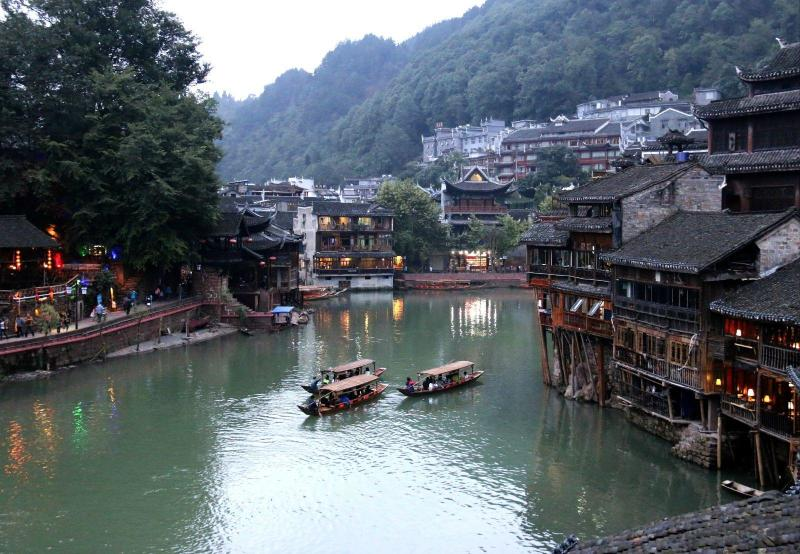

游玩攻略
张家界可以游玩的景区众多，这里说下最好的四个景区：
其一：武陵源景区也就是森林公园，这是来张家界必玩的景区，里面景点有森林公园、金鞭溪、袁家界、杨家界、天子山、十里画廊等，至少需要游玩二天的时间，门票为248元。记得带一件薄外套跟雨伞，张家界森林公园山上早晚凉，经常下雨，天气不稳定。记得穿运动鞋，最好防滑。
其二：天门山景区，这里面有亚州最长的索道、世界公路奇观、玻璃栈道等，游玩时间为大半天的时间，门票258元包括往返的大索道。
其三：大峡谷玻璃桥风景区，新开发的玻璃桥就是在这个景区了，这里需要游玩一天的时间，大峡谷及玻璃桥门票总共为258元。
其四：凤凰古城，离张家界车程四个小时，也是游湖南必去的景点之一，门票148元（不去九景可不买票），游玩时间为一到二天的时间。
| 景点 | 门票 | 开放时间 | 适宜季节 | 景区级别 |
|---|---|---|---|---|
| 凤凰古城 | 免费 | 8：00～18：00 | 春夏秋季 | 4A |
| 武陵源风景名胜区 | 248元 | 6：30～18：30 | 春秋季 | 5A |
| 天门山风景名胜区 | 258元 | 全年 | 四季 | 5A |
大家可以根据游玩的时间来按排行程，或者根据游玩的景区来按排时间:
PS: 天门山景区和大峡谷的玻璃桥一定得提前三天以上预定才有票！打算去这两个景区的朋友记得一定要提前预订好票。